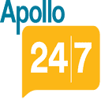

Principal Software Engineer
Apollo 24|7 · Full-time
Bengaluru, Karnataka, India · On-site
AskApollo — AI Clinical Chatbot
- Architected and deployed AskApollo, an AI clinical chatbot with complex orchestration and tool-calling workflows, handling 4,000–5,000 chats/day.
- Expanded to multimodal inputs: voice-to-text, PDF parsing, and image processing. Engineered dialogue to deliver direct answers, dynamic follow-ups, and recommendations for doctors, lab tests, and medical products.
- Built an AI suggestions service across 20+ entry points on the Apollo247 app, scaling to 1–2 Lakh (100K–200K) API calls daily.
- Orchestrated integration of 5+ domain-specific chatbots with seamless automated handoff for intent routing and context preservation.
- Incorporated advanced RAG pipelines (semantic search) and evaluation frameworks for response quality, safety, and hallucination guardrails.
- Optimized LLM inference with vLLM, achieving 4× latency reduction. Prototyping autonomous workflows with DSPy.
- Developed Sympai, a multi-agent symptom checker powered by embeddings and semantic search, migrating from legacy Neo4j knowledge graph and NLP models.
CIE — Clinical Intelligence Engine
- Built symptom and disease prediction models by parsing real Apollo 247 patient data.
- Engineered pipelines for parsing, NER, aggregation, and modeling on patient data.
- Built pipeline to load parsed patient data into Neo4j knowledge graph.
- Developed internal tools for doctors to build and maintain the knowledge base.